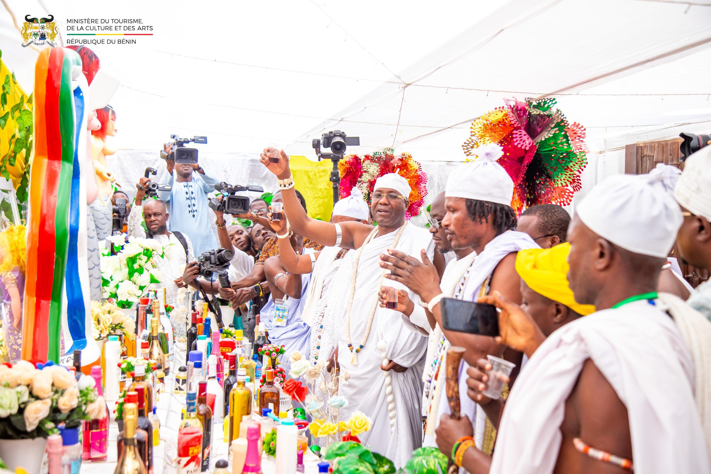
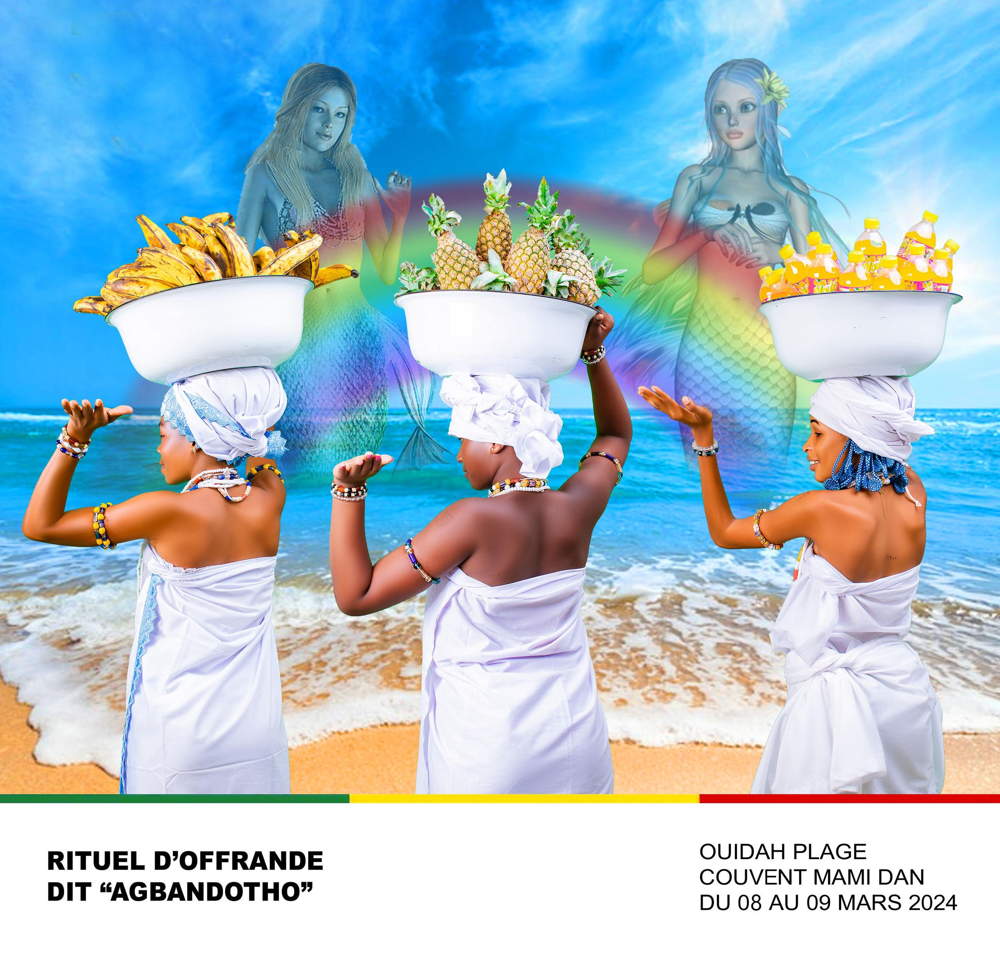
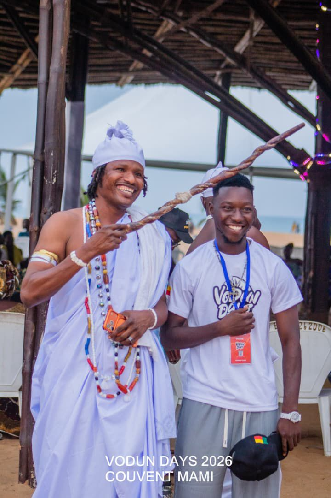
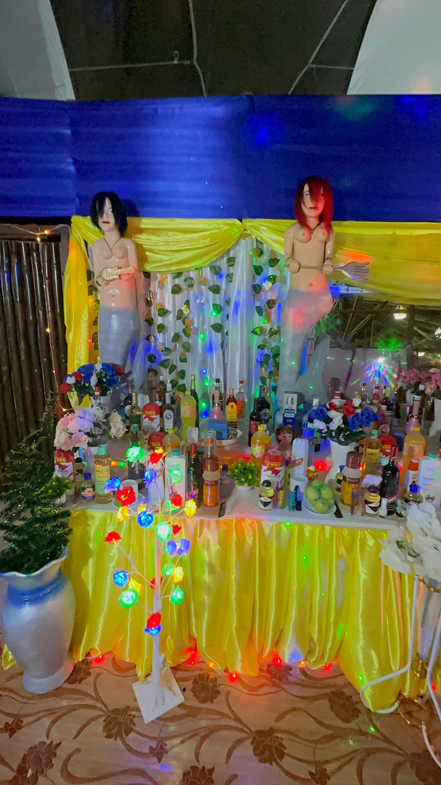
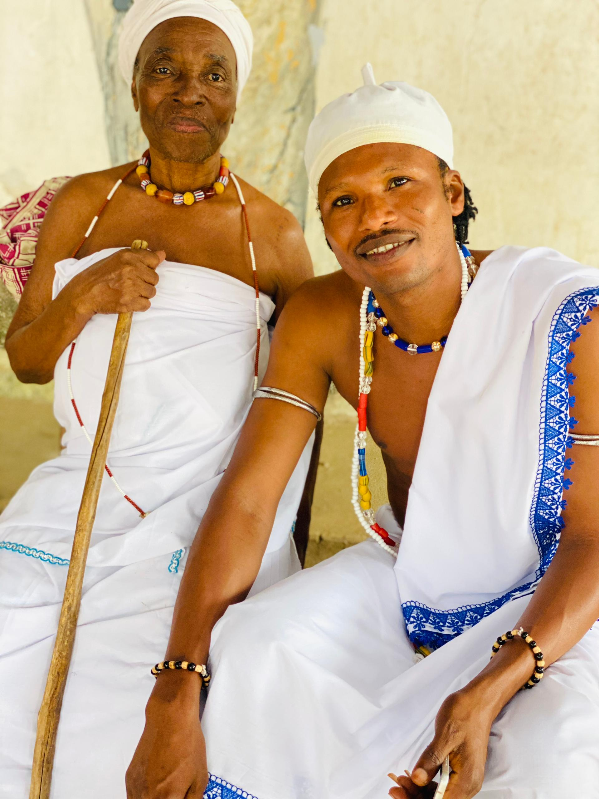

Vodun Days · Masques · Agbandotho · Zangbétos · 10 Janvier
Chaque année, Majesté Togbé Yédy est au cœur des plus grands rassemblements Vodun du Bénin. Il orchestre, bénit et guide les célébrations.
Festival international du Vodun au Bénin. Togbé Yédy est l'un des organisateurs clés. Il supervise les rituels, gère le couvent national Mami Dan à la plage et participe à la promotion de cet événement inscrit dans le calendrier culturel mondial.



Chaque année, des milliers de fidèles se rassemblent au bord de la mer pour honorer Mami Dan. Initié par Majesté Togbé Yédy, le pèlerinage Agbandotho est un moment intense d’offrandes, de prières pour la fertilité, la chance et la protection contre les mauvaises choses.

Célébration des masques sacrés du Mono et du Couffo. Togbé Yédy participe à l'organisation et aux cérémonies, mettant en valeur la richesse des traditions masquées béninoises.
Les Zangbétos, gardiens de la nuit, défilent dans les rues du département du Mono. Togbé Yédy coordonne ce festival unique qui attire curieux et initiés de toute la sous-région.

Fête traditionnelle ancrée dans la commune d'Athiémè, célébrant les divinités et l'unité de la communauté. Togbé Yédy en est l'organisateur principal, renforçant le lien social et culturel.